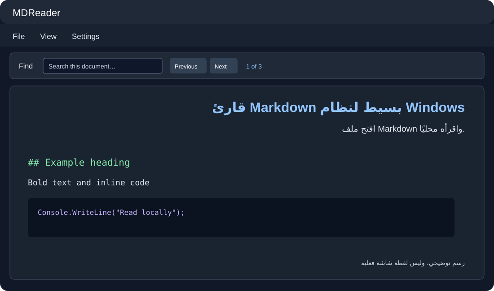

عن المنتج
قارئ ملفات .md و.markdown محلي وبسيط. موجّه لقراءة README والملاحظات والتوثيق التقني. التطبيق للقراءة فقط؛ لا يحرر الملف ولا يحفظ تغييرات عليه.
- يعمل على ملفات يختارها المستخدم؛ لا يحتاج حسابًا أو مزامنة.
- يعرض Markdown ويدعم النص العربي واتجاه RTL، مع إبقاء الشيفرة LTR.
- يشمل فتح ملف، سحبًا وإفلاتًا، بحثًا، وإعادة تحميل، وتكبيرًا.

طريقة الاستخدام
| الوظيفة | الطريقة | السلوك |
|---|---|---|
| فتح | File → Open أو Ctrl+O | منتقي Windows لملف Markdown |
| سحب وإفلات | اسحب ملفًا إلى النافذة | يفتح الملف ويستبدل الحالي |
| بحث | Ctrl+F، اكتب، ثم Previous/Next | عدد النتائج ومقتطف من النص |
| تحديث | Ctrl+R | إعادة قراءة المسار من القرص |
| تكبير/تصغير | Ctrl+Shift+= أو Ctrl+Plus، Ctrl+- أو Ctrl+Minus | Ctrl+0 يعيد 100% |
الثيمات ليست ميزة مكتملة متحققًا منها؛ لا تذكرها على أنها جاهزة للنشر العام.
الكود والبنية
التدفق: واجهة WinUI ← منتقي الملفات ← ShellViewModel ← قارئ/محلل Markdown في Core ← MarkdownRenderer ← عناصر WinUI.
// استخراج HWND لنافذة WinUI 3
public static IntPtr GetWindowHandle(Window window)
{
ArgumentNullException.ThrowIfNull(window);
return WinRT.Interop.WindowNative.GetWindowHandle(window);
}// فتح الملف وعرضه
var info = MarkdownFileReader.ReadFile(filePath);
var content = File.ReadAllText(filePath, Encoding.UTF8);
_readerViewModel.LoadDocument(info, content);المجلدات: src/MDReader.App للواجهة والتكامل مع Windows؛ src/MDReader.Core للتحليل والمنطق؛ tests/MDReader.Core.Tests للاختبارات.
التشغيل والبناء
cd D:\AI_PROJECTS\MDReader
dotnet run --project .\src\MDReader.App\MDReader.App.csproj -- .\samples\demo-arabic.md
dotnet build .\MDReader.sln
dotnet test .\MDReader.slnيتطلب البناء Windows و.NET SDK 10 وWindows SDK/Build Tools. تشغيل نسخة التطوير لا يعني تثبيت MSIX.
التثبيت والشهادات
الحزمة الحالية للتجربة MSIX x64 رقم 1.0.1.0 وموقعة بشهادة ذاتية CN=AppPublisher. يوجد CER عام فقط؛ لا يتضمن ZIP المفتاح الخاص PFX أو كلمة مروره. يجب الوثوق بشهادة الاختبار على جهاز sideload قبل التثبيت؛ يشرح دليل الإصدار الخطوات.
للتوزيع عبر Microsoft Store لا تحتاج شهادة خاصة؛ يوقّع المتجر الحزمة عند النشر. للتنزيل المباشر العام استخدم شهادة موثوقة عامة أو خدمة توقيع إنتاجية. دليل Microsoft لتوقيع MSIX.
لم يتم رفع التطبيق إلى Store أو نشره على موقع عام. يلزم اختيار القناة وتجهيز حساب/صفحة المنتج وإكمال مراجعة الإصدار.
معلومات الإصدار
- الهوية:
MDReader.MDReader— الناشرCN=AppPublisher. - الشهادة الحالية للاختبار تنتهي 2027-10-06؛ لا تستخدمها للنشر العام.
- النسخة 1.0.1.0 متوافقة كتحديث فوق 1.0.0.0 مع المحافظة على هوية الناشر.
- البناء الأخير ناجح، مع تحذير nullability في MarkdownAstBuilder وتحذيرات trim في Release تحتاج مراجعة قبل الإصدار العام.